Last modified: Thu Aug 16 2018 22:49:02 GMT+0800 (Malay Peninsula Standard Time)
Chapter 2. Create a Rails Application
In this Chapter, we are going to create a sample Ruby on Rails application. By default, SQLite3 will be serve as the database engine when you generate a website. However, PostgreSQL will be serve as the database engine when you deploy it to Heroku PaaS.
2.1 Ruby on Rails MVC
Ruby on Rails uses Model, View, Controller (MVC) architecture. Refer to Chapter 1.2 to for MVC explanation.
Model, usually located at the directory MyApp/models/, is where you should declare the associations and SQL Query for a specific purpose. Rails support six types of associations: “belongs_to”, “has_one”, “has_many”, “has_many :through”, “has_one :through”, and “has_and_belongs_to_many”. In Chapter 2.2, Scaffolding with references, we will see an example that uses “belongs_to” association. The naming conventions for the model is based on the name of your View and Controller. For example, if you have a View folder named Comments and controller named Comments, your model’s file name should be comment.rb.
Note: comment.rb is singular.
View, usually located at the directory MyApp/views/, is where you style your page. It is the front end where it display messages to user. Your header and footer file should belongs to here. All files should end with the extension .html.erb or if you are familiar with HAML, you can replace the extension with .haml. Your CSS stylesheet should be located at MyApp/assets/stylesheets/ and the naming conventions for the stylesheet will be based on your View. For example, if you have a View folder named Comments, your stylesheet should named comments.scss. For Javascripts, it should be located at MyApp/assets/javascript/.
Note: You should also rename your application.css file to application.scss.
Controller, usually located at the directory MyApp/controllers/, the place where all the “things” are happening. This is the place where you should declare all your operations. The naming conventions for the controller will based on the name of your View. For example, if you have a View folder named Comments, your controller for Comments should be comments_controller.rb.
By the time you are done with this part, ActiveRecord Associations, you should be able to identify the Model, View, and Controller components correctly.
2.2 Rails Scaffolding
Scaffold command generates major pieces of an application. A model, view, and controller will be generated in just one line of code. To do this, enter the code below in your terminal window. Do note that Post is the name of the MVC and the first character should begin with a capital letter.
rails generate scaffold Post title:string content:text
The scaffold command will generate a few folders and files in your application as discussed in Chapter 2.1. This includes a Post model, Posts controller, Post view to list, create, edit, and delete post(s). Figure 2.2.1 below shows the operation and files created.
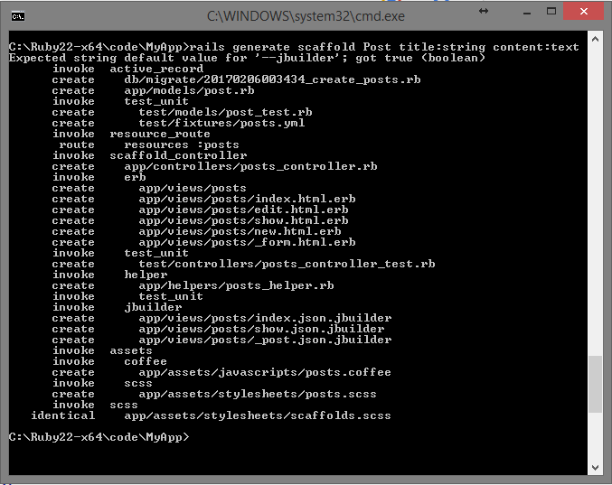
Figure 2.2.1: Files created when a scaffold command is used
If you have done a mistake and would like to undo the operation, replace the word generate with destroy in the command you have ran and run it again. All the files that was just created will be removed. Figure 2.2.2 shows the operation and the output of files being removed.
rails destroy scaffold Post title:string content:text
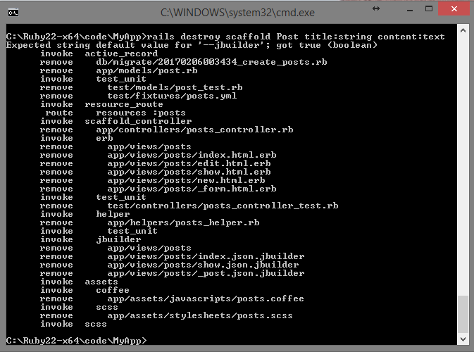
Figure 2.2.2: Removed a scaffold using destroy command
2.3 Database Migration
For each model that are created, modified, and deleted, a migration operation has to be done in order for the Web Application to rebuild the database. To this, run the command below. Figure 2.3.1 shows the terminal window that show a database is migrated.
rake db:migrate
However, to destroy a database, you may have to manually delete the file development.sqlite3 file in db folder. Whenever you receive an error stating that the table is already exists, the quickest way resolving this error is to delete the file development.sqlite3 in db folder and run a migration again.
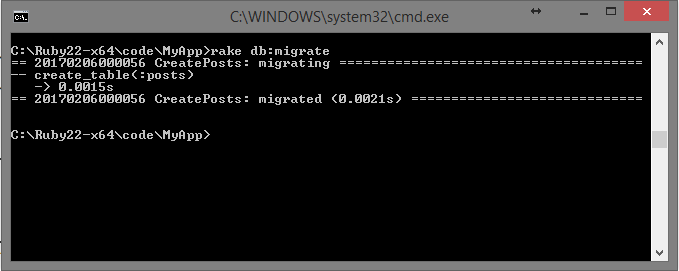
Figure 2.3.1: A database table is migrated
2.4 Start a Web Server
Run the command rails server or rails s at the root directory of your Web Application. Be sure that you are at the root directory of your directory of your Web Application.
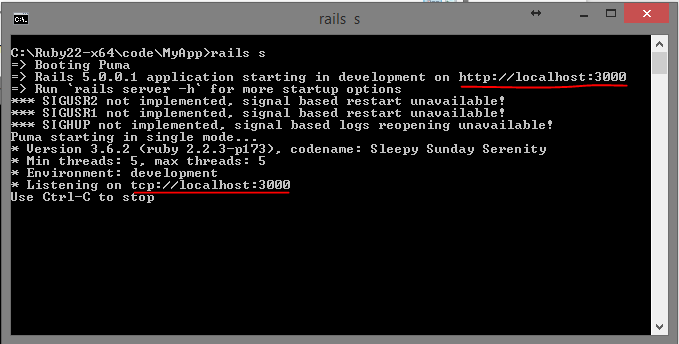
Figure 2.4.1: A Rails server is started
Based on Figure 2.4.1, we see that there are two links on terminal output. Both of the addresses may be different. The default address for your Web Server should be localhost:3000. However, you may get a different address depending on your operating system and configuration. Try the other address if localhost:3000 is not working for you.
At some point, you may get an error saying that A server is already running. Check /PATH/server.pid. To fix this, go to the folder mentioned and remove at the server.pid. I do not have the screenshot of that as it is really rare to encounter that issue, but at some point, it will happen.
2.5 Insert, Edit, Delete Operation
Navigate to localhost:3000/posts to view the index page of Posts. Figure 2.5.1 shows the index page of Posts. The index of the page is the based on the name you used on the scaffold command earlier. Do note that the path is plural, Posts. If you are unable to access the page, you may have a different path. Refer to Chapter 2.4 to learn more about the path.
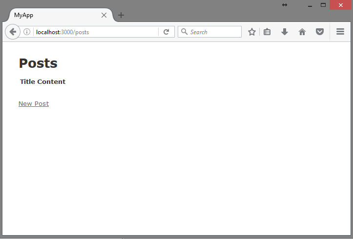
Figure 2.5.1: Index page of Posts
Create a few posts and we can see our Post that we created in SQLiteStudio. Refer to section 1.5 to learn how to add your database table to SQLiteStudio. Refresh window by pressing the blue refresh icon, . The data that you have entered will show up in the database. The data shown in the database should match the data shown in the index of Posts. Figure 2.5.2 shows the result of the operation. The logs of the Web Server show the detail operation of inserting and committing a transaction successfully.
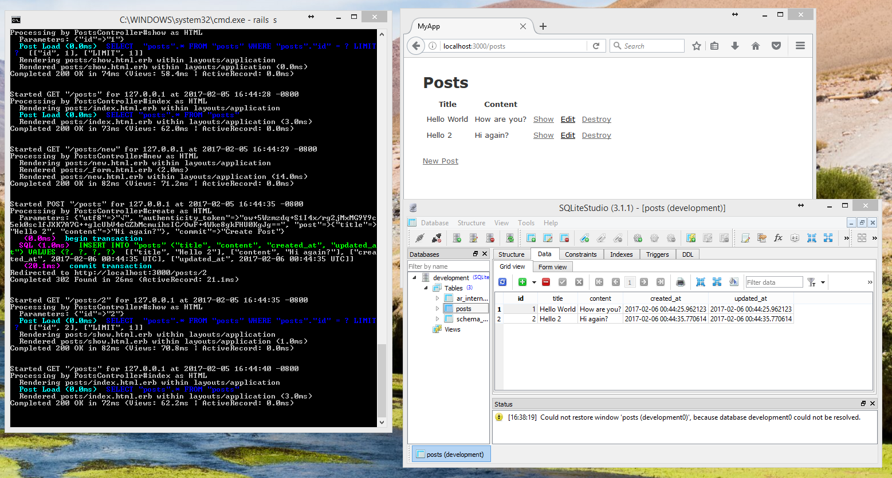
Figure 2.5.2: Data in SQLiteStudio matches the information shown in Posts index
2.6 Populating Database with seeds.rb
The file in db/seeds.rb allows developer to feed default values easily and quickly to an application. In the seeds file, you have full access to all the classes and methods you defined within your application.
Assume that you have a Post model. In the model, there is only one fields: title and text. To populate the database with data, we can use create command. If you have a model with reference key, do make sure that the content exists in the table that the reference key is pointing to.
#MyApp/app/db/seeds.rb
Post.create(title: 'Hello World 1', content: 'Test 1')
Post.create(title: 'Hello World 2', content: 'Test 2')
Post.create(title: 'Hello World 3', content: 'Test 3')
Post.create(title: 'Hello World 4', content: 'Test 4')
Figure 2.6.1 shows the content of the seeds.rb with the sample that shown in the table above.
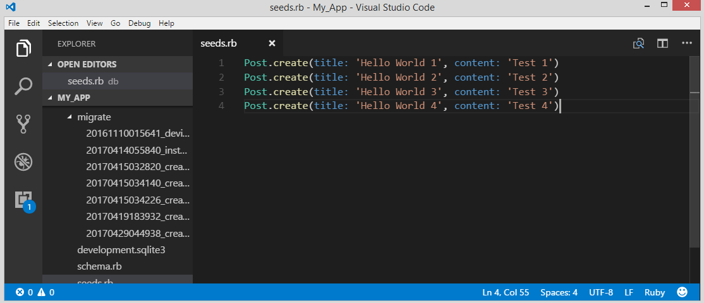
Figure 2.6.1: Content in seeds.rb
To feed the file to the database, run the command below. Do note that rake db:seed will not output in the terminal unless there is an error in the seed.rb. Figure 2.6.2 shows the data is fetched to the database successfully without any issue.
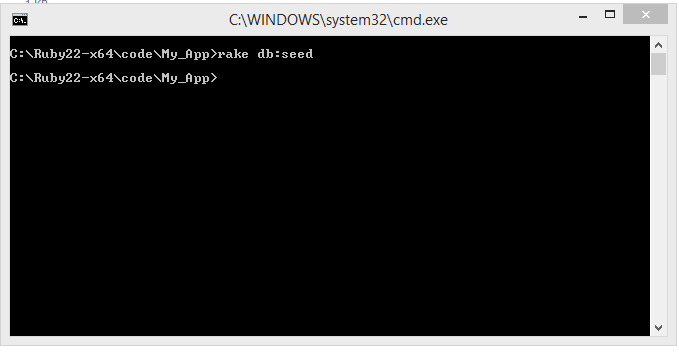
Figure 2.6.2. rake db:seed command ran successfully without output any log.
To verify the result, we can view the data in the Posts table in SQLiteStudio database manager. Figure 2.6.3 shows Posts table is populated and matched with the data in seeds.rb as shown in Figure 2.6.1.
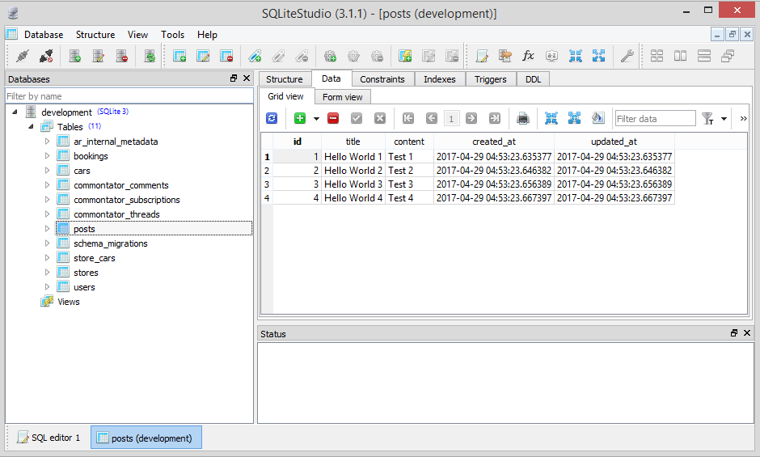
Figure 2.6.3. Posts table with populated data from seeds.rb
If you are unable to achieve the step above, remove your database table and run the migration. After the migration is successfully, fetch the data using the command rake db:seed.
2.7 More rake db Command
This table is compiled by Jaco Pretorites. He combined the information shown in Table 2.7.1 from StackOverflow and Rails source code. In his website, he explains all different Rails db Rake Tasks and what each task they do. Personally, I have not tried all the commands and do not guarantee it will work. In order for the commands below to work, you have to add rake to each of the command. For example, for the first command in the table, we have to use rake db:create.
Table 2.7.1: All Rails db Rake Tasks and What They Do
| Command | Description |
|---|---|
| db:create | Creates the database for the current RAILS_ENV environment. If RAILS_ENV is not specified it defaults to the development and test databases. |
| db:create:all | Creates the database for all environments. |
| db:drop | Drops the database for the current RAILS_ENV environment. If RAILS_ENV is not specified it defaults to the development and test databases. |
| db:drop:all | Drops the database for all environments. |
| db:migrate | Runs migrations for the current environment that have not run yet. By default it will run migrations only in the development environment. |
| db:migrate:redo | Runs db:migrate:down and db:migrate:up or db:migrate:rollback and db:migrate:migrate depending on the specified migration. I usually run this after creating and running a new migration to ensure the migration is reversible. |
| db:migrate:up | Runs the up for the given migration VERSION. |
| db:migrate:down | Runs the down for the given migration VERSION. |
| db:migrate:status | Displays the current migration status. |
| db:migrate:rollback | Rolls back the last migration. |
| db:version | Prints the current schema version. |
| db:forward | Pushes the schema to the next version. |
| db:seed | Runs the db/seeds.rb file. |
| db:schema:load | Loads the schema into the current environment’s database. |
| db:schema:dump | Dumps the current environment’s schema to db/schema.rb. |
| db:setup | Runs db:schema:load and db:seed. |
| db:reset | db:drop and db:setup. |
| db:migrate:reset | Runs db:drop, db:create and db:migrate. |
| db:test:prepare | Check for pending migrations and load the test schema. (If you run rake without any arguments it will do this by default.) |
| db:test:clone | Recreate the test database from the current environment’s database schema. |
| db:test:clone_structure | Similar to db:test:clone, but it will ensure that your test database has the same structure, including charsets and collations, as your current environment’s database. |
2.8 Scaffolding With References
Assume that you have created Post with scaffold command. Now, you want to add comment feature to each of the post. To achieve that, we can scaffold with references. To do that, enter the command below and migrate the database after all the files are created successfully. If you wished to create just the controller or model, you can replace the scaffold command with controller and model.
rails generate scaffold Comment comment:text post:references
Based on the command above, we are creating Comment with two arguments, comment and post. comment is a text and post is a reference to post model.
Now, each of the comment that you create will belong to each of the post. In Figure 2.8.1, by viewing your Comment entity in the SQLiteStudio, you will notice that an attribute, post_id, is created automatically. post_id will store the ID of the post that each comment reference to.
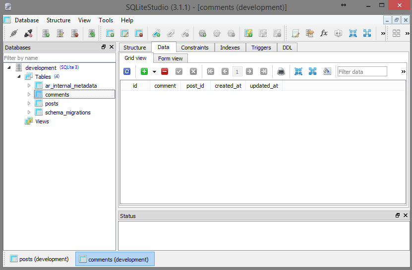
Figure 2.8.1: Comments table in SQLiteStudio Database Manager.
Navigate to localhost:3000/comments to view the index page of Comments and populate some data by creating new comments. Figure 2.8.2 shows a sample input of a new comment. Post field will accepts integer only and the integer must exist within the ID column in Post table. If you entered the value 1 in the Post field, the new comment that you create will associate itself to the specific post with the ID you enter in the Post table.
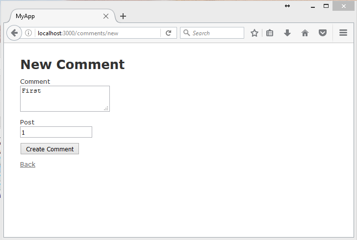
Figure 2.8.2: Creating new comment with reference ID
Figure 2.8.3 shows the Comments table and Index page. It is usual that Post column in the index page is showing some garbage value since the view does not reference to the correct parameter in the table. To fix this, refer to Chapter 2.10.
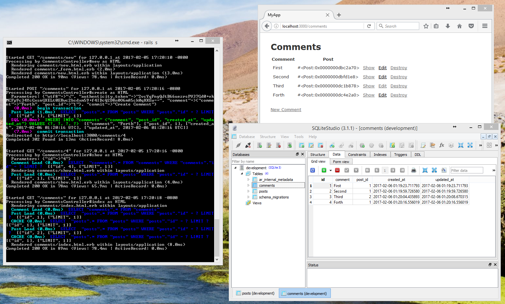
Figure 2.8.3: The result of the operation
When a scaffold command with reference is used, associations are added automatically to the models. In Comment.rb, we see that belongs_to :post association is added by default. This simply means that post_id is referencing to Posts table. Figure 2.8.4 shows the Relation Schema of the Database
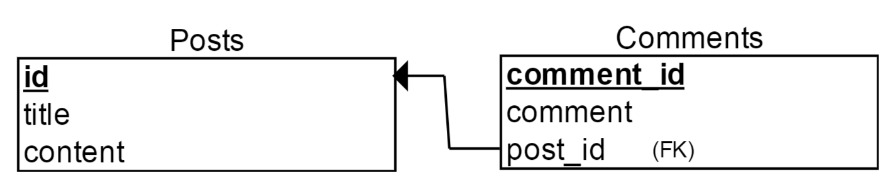
Figure 2.8.4: Relation Schema of the Database table Posts and Comments
If you the Model is created manually, you have to add the associate by yourself. You have to setup the associate in order for the Web Application to behave correctly during Insert, Update, and Delete operations. You can not simply add an associate without understand what it is doing. It will give you a lot of trouble if you do so.
2.9 Create a New Page
A page can be created under any controller. However, the page method in the controller has the match the filename of your view. To create a new page in Post controller, navigate to the directory below and add the code in Table 2.9.1 to controller. Figure 2.9.1 shows the result after the code is added.
Table 2.9.1: Code to add to controller
#MyApp/controllers/posts_controller.rb
def more
end
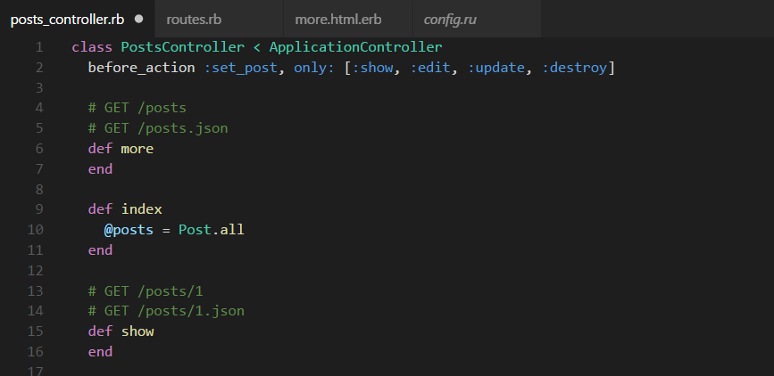
Figure 2.9.1: Result of the code added
Create a View file with filename and path listed below as shown in Table 2.7.2. Add Hello World! to the file that you create. Figure 2.9.2 shows the result of the operation in Table 2.9.2.
Table 2.9.2: Create a view file and insert Hello World!
#MyApp/views/posts/more.html.erb
Hello World!
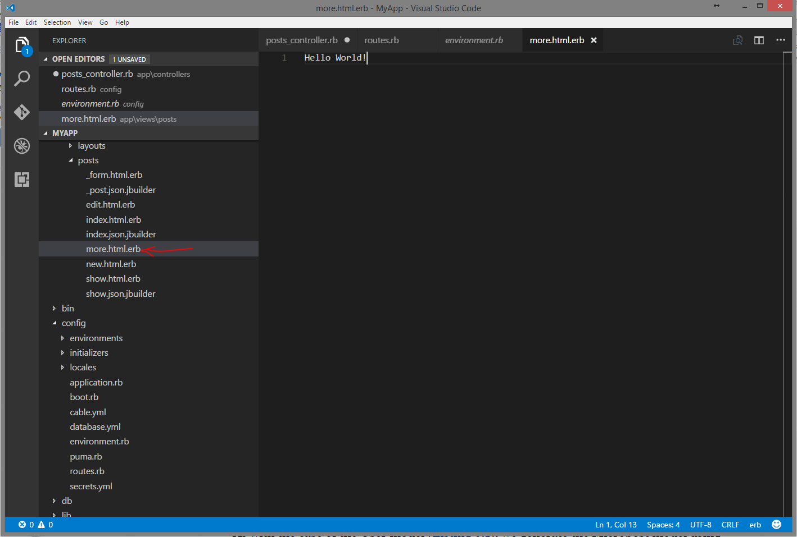
Figure 2.9.2: Result of the operation shows in Table 2.9.2
The last step would define and tell your web server where to find and retrieve the file. Add the following code to the file shown in Table 2.9.3. Figure 2.9.3 screenshot with the operations carried out is shown below. more_info is the route that you will need to enter in your web browser to view the content of the page while posts is the folder in the directory MyApp/views and more is the of the file where you want your Web Server to fetch.
Table 2.9.3: Setting up the routes.rb
#MyApp/config/routes.rb
get 'more_info', to: 'posts#more'
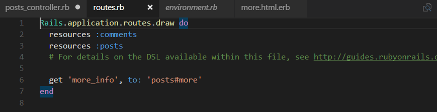
Figure 2.9.3: The code, as shown in line 6, is added to routes.rb
To view the page that you have created, insert the address below in your Web Browser. Figure 2.9.3 shows the Hello World! is rendered.
localhost:3000/more_info
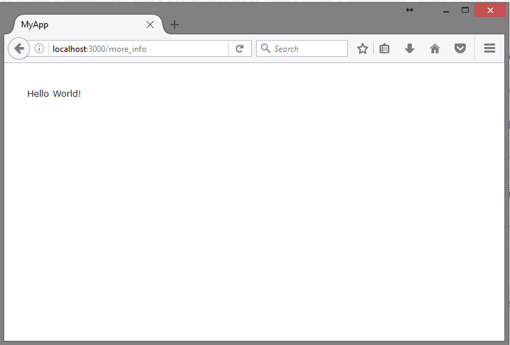Figure 2.9.4: Hello World! is shown in the page
If you are unable to access this page, check your route and local address to your Web Application.
2.10 Retrieve Objects using ActiveRecord from Multiple Table
The advantage of using ActiveRecord is you can easily retrieve information from the other table that contain reference key to the specific table. Usually, we have to write SQL (Structured Query Language) query to achieve the same operation. To see the magic, let’s begin by modifying the controller as shown in Table 2.10.1. The result of the modification is shown in Figure 2.10.1.
Table 2.10.1: Code to add to controller
#MyApp/controller/posts_controller.rb
#Add under def more
@comments = Comment.all
Do note that Comment is a case sensitive variable. This will reference to the Comment model while .all means it will get field from the Comment model. The equivalent of Comment.all in SQL is shown as below.
SELECT * FROM Comments
@comments in the controller is an instance variable and is available to all methods within the class and available to View. If you removed the ampersand, @, the variable is only available within the class.
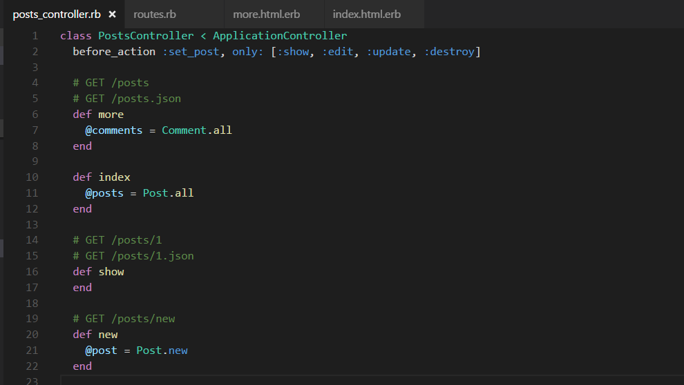
Figure 2.10.1: Result of the controller
Add the code as shown in Table 2.10.2 to the file specified below. Figure 2.10.2 shows the result of the code added to the file.
Table 2.10.2: Code to add to View
#MyApp/view/posts/posts/more.html.erb
<!--See below; This is how you comment in Ruby ERB -->
<h1>More Information</h1>
<table>
<thead>
<tr>
<th>Post ID</th>
<th>Title</th>
<th>Content</th>
<th>Comment ID</th>
<th>Comment</th>
<th colspan="3"></th>
<th colspan="3"></th>
</tr>
</thead>
<tbody>
<!-- @comments is passed from controller to view -->
<% @comments.each do |comment| %> <!-- for loop -->
<tr>
<td><%= comment.post.id %></td> <!--get Post ID using reference -->
<td><%= comment.post.title %></td> <!--get Post title using ref -->
<td><%= comment.post.content %></td> <!--get Post content using ref -->
<td><%= comment.id %></td> <!--get Comment ID -->
<td><%= comment.comment %></td> <!--get Comment from Comment -->
<td><%= link_to 'Show Comment', comment %></td>
<td><%= link_to 'Edit Comment', edit_comment_path(comment) %></td>
<td><%= link_to 'Destroy Comment', comment, method: :delete, data: { confirm: 'Are you sure?' } %></td>
<td><%= link_to 'Show Post', comment.post %></td>
<td><%= link_to 'Edit Post', edit_post_path(comment.post) %></td>
<td><%= link_to 'Destroy Post', comment.post, method: :delete, data: { confirm: 'Are you sure?' } %></td>
</tr>
<% end %>
</tbody>
</table>
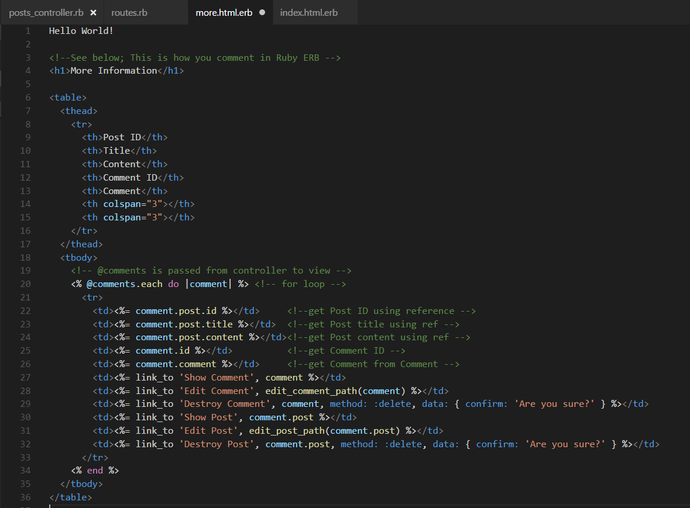Figure 2.10.3: Result of the code added to View
In the view, as shown in Figure 2.10.3, we use .each to print each of the content in the @comments instance variable. In Figure 2.10.3, line 24, comment.post.content, is retrieving content field in Post model. This is because there is a post_id field in our Comment table. The post_id will go to Post table and retreive the row and fetch the content field. In line 31, edit_post_path(comment.post), the concept is similar.
To view the page that you just created, insert the address below in your Web Browser. The result is shown in Figure 2.10.4.
localhost:3000/more_info
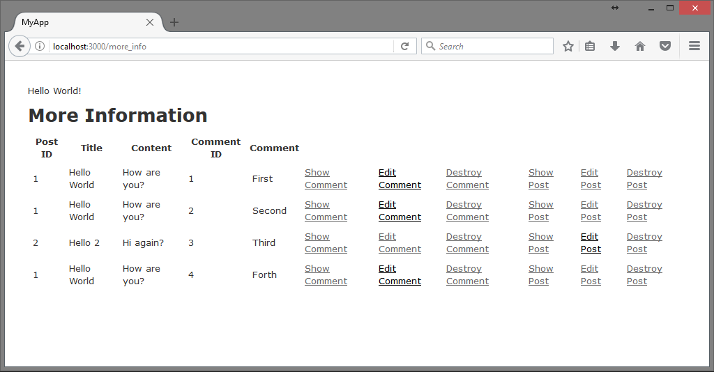
Figure 2.10.4: Result of the operation shown in Web Browser
By looking at the result as shown in Figure 2.10.4, we can see that we managed to reference the Post model from Comment model easily by referencing. From the result, we can see that there are two posts, Hello World and Hello 2. There are three comments First, Second, and Fourth that belongs to Hello World and there is only one comment Third that belongs to Hello 2. If everything is done correctly, you should be able to use the perform each operation successfully as shown in the description of the link: Show Comment, Edit Comment, Destroy Comment, Show Post, Edit Post, and Destroy Post.